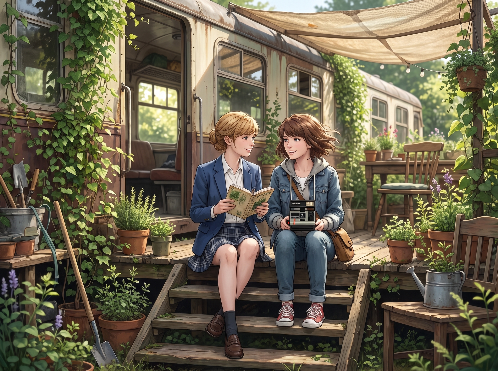
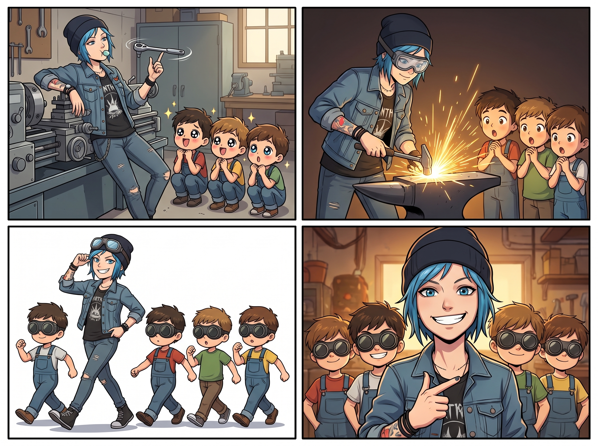

意外的孩子王


週六上午十點，學院心理學系與藝術治療系的指導教授親自帶著十幾個來自社區合作項目的七至十歲小朋友，再次造訪了波特蘭東區的舊鐵道花園。
原本教授與 Kate 設想的「標準劇本」是這樣的：溫柔如天使的 Kate 帶著孩子們辨認鼠尾草；文藝親切的 Max 拿著拍立得教孩子們構圖；而 Chloe 與 Victoria 則延續上次的默契，客串當個稱職的助教，頂多偶爾被孩子們纏著要看她們的紋身或高跟鞋。
然而，當大門推開不到半小時，現場的發展卻以一種匪夷所思的方式徹底失控。
一、常規套路的滑鐵盧
活動剛開始，Kate 穿著米白色長裙，雙手合十，用最溫柔的聲音試圖引導孩子們：「大家先圍成一圈，我們來聽向日葵生長的心跳聲好不好？」
幾個過分精力旺盛的小男孩對著泥土抓了抓腦袋：「Kate 老師，向日葵真的會心跳嗎？它能像變形金剛一樣發射導彈嗎？」
另一邊，Max 拿著相機蹲下來剛想教孩子構圖，一個缺了門牙的小女孩就拽了拽她的衣角，指著遠處工作台上那個散發著深藍色金屬光芒的大傢伙，兩眼放光：「那個大鐵夾子！是不是能把霸王龍的骨頭夾碎？！」
溫柔的聖光與文藝的感召，在滿腦子冒險與破壞慾的小神獸面前，瞬間顯得太過日常。
二、Chloe 的硬核破壞美學
Chloe 本來只打算像上次一樣客串幫忙，正百無聊賴地靠在車床邊嚼著薄荷糖。但當她隨手拿起一把大號棘輪扳手在半空中轉了個漂亮的刀花時，五個小男孩的眼睛瞬間瞪得像銅鈴——這批孩子裡有幾個沒參加過上次的活動，還是頭一次見識到「船長」的真正實力。
「哇靠……那個大姐姐的頭髮是藍色的！她手裡有雷神之鎚！」
被一群小豆丁圍住的 Chloe 愣了兩秒，骨子裡的「孩子王反派之魂」瞬間被點燃。她戴上護目鏡，用手動打火石在廢鐵砧上「刷」地摩擦出一蓬燦爛的金色火星，引得全場小男孩發出整齊劃一的「WOOOOOO——！！」驚呼。
不到半小時，六個小男孩全部自願戴上了 Chloe 的備用防塵護目鏡，排著隊跟在她身後學著大步流星的囂張走姿，齊刷刷喊她「Price 船長」。
三、Victoria 的名媛霸總濾鏡
Victoria 維持著上次那種若即若離的矜持，坐在高背椅上拿著精緻的法式美甲修指甲，對著幾個湊過來的新面孔小女孩淡淡說了句：「離我的喀什米爾圍巾遠一點，髒手禁止觸碰。」
然而，這種冷酷高貴的氣場，在小女孩眼裡簡直就是活生生的童話女王走進了現實。小女孩們不僅沒有被嚇退，反而像追星一樣圍在她的高背椅旁。Victoria 被盯得無奈，只能從手提包裡掏出一盒原本用來修復古董首飾的施華洛世奇微型水鑽，面無表情卻動作精準地幫每個小女孩在額頭貼上完美的星芒圖案。
四個小女孩立刻挺直了腰板，學著 Victoria 的樣子優雅地端起茶杯，把 Kate 做的草本茶當成香檳來乾杯，紛紛宣誓要成為「Victoria 女王的皇家騎士團」。
四、靈魂互換的修羅場
到了下午茶時間，一邊是 Chloe 的孩子們爭奪著「誰能幫船長遞扳手」的崇高特權；一邊是 Victoria 腳邊圍著一圈認真聽她講色彩理論的小女孩——而真正的活動主辦人 Kate 和 Max，正並排坐在花園的木台階上，手裡拿著無人問津的植物圖鑑和拍立得，在微風中面面相覷。
「……Max，」Kate 眨了眨眼睛，捧著茶杯小聲問道，「我們剛才講的那個種子破土而出的故事……是不是真的太沒有吸引力了？」
Max 扶了扶黑框眼鏡，看著那邊正被孩子們眾星捧月的 Chloe 和 Victoria，無奈地「噗嗤」一聲笑了出來：
「不，Kate，妳的故事很完美。只是……我們工坊剛好有一隻活生生的野生藍毛冒險王，和一個自帶十級氣場的真·冰雪女王罷了。」
「咔嚓。」
Max 舉起相機，將這個神奇的午後定格下來：畫面左邊，Chloe 被三個戴著護目鏡的小男孩騎在肩膀上狂笑；畫面右邊，Victoria 傲嬌地揚著下巴，身邊圍滿了頭戴水鑽貼紙的小女孩。
放下相機時，她轉頭看向身旁的 Kate，笑倒在她肩膀上的溫柔笑意，成了這個午後另一張永遠不會被沖印出來、卻更加珍貴的畫面。